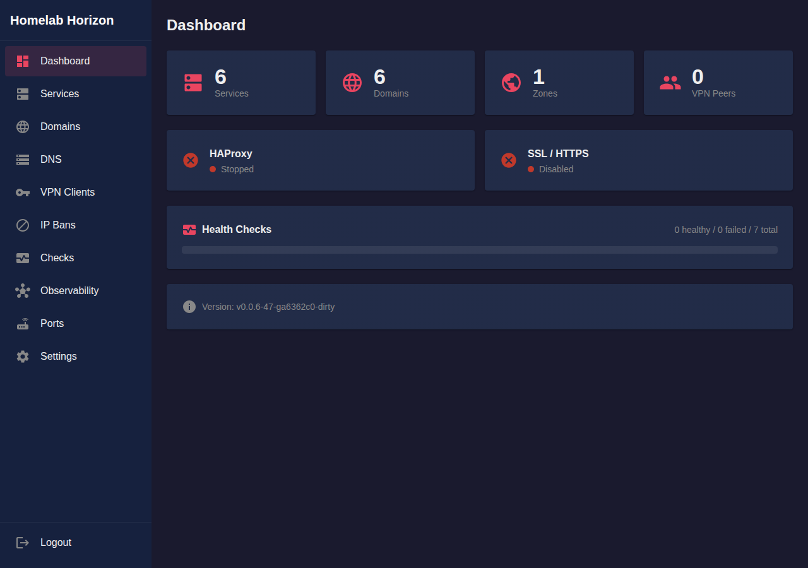
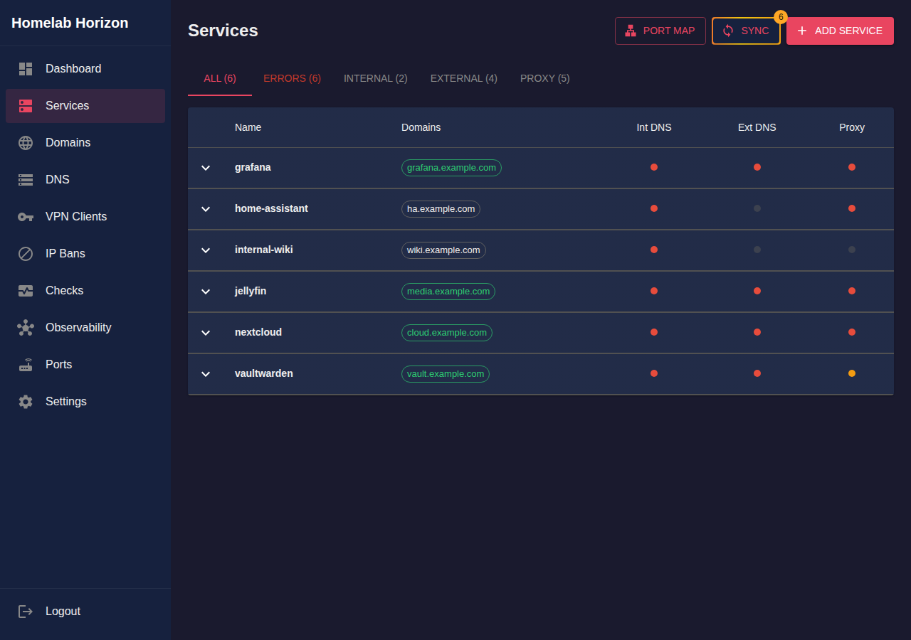
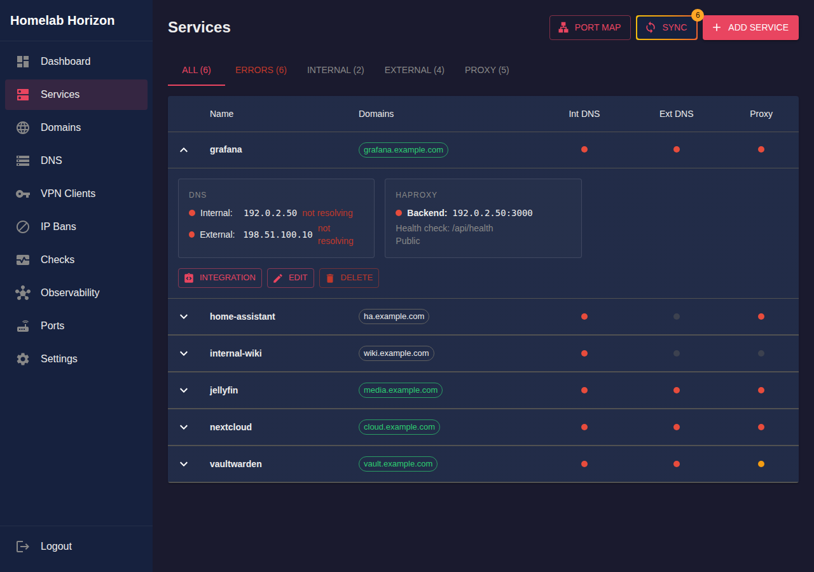
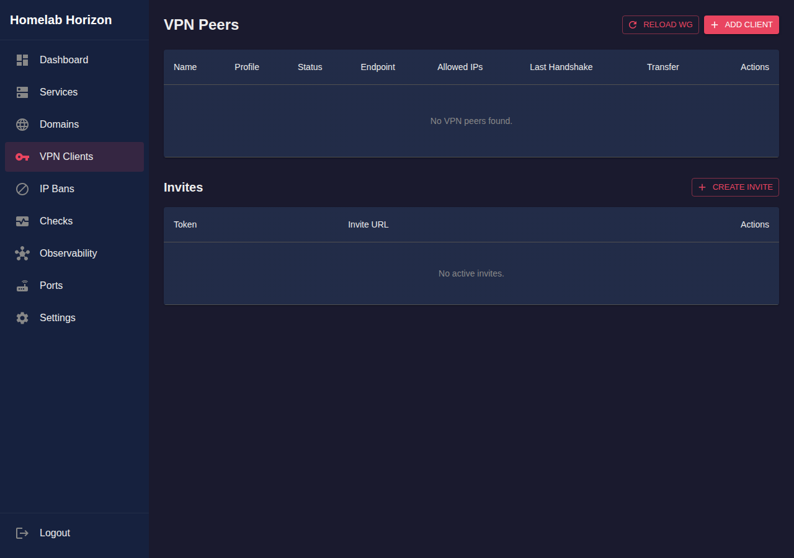
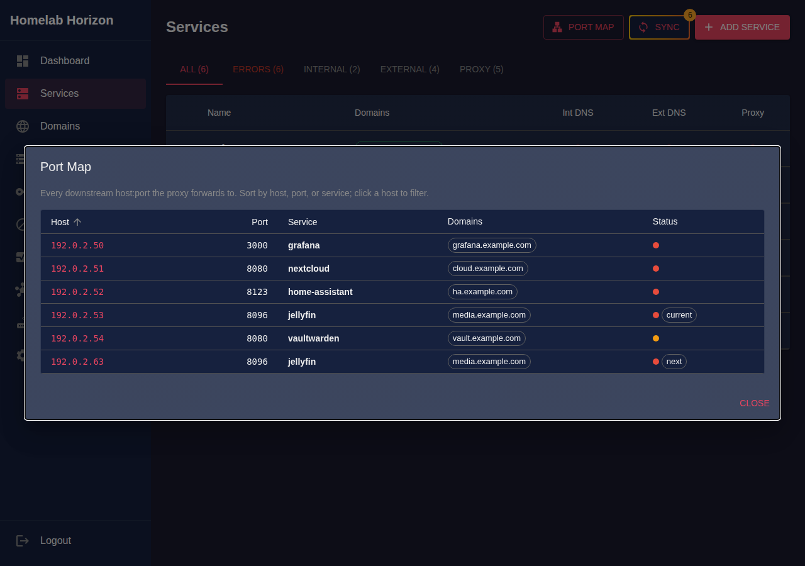
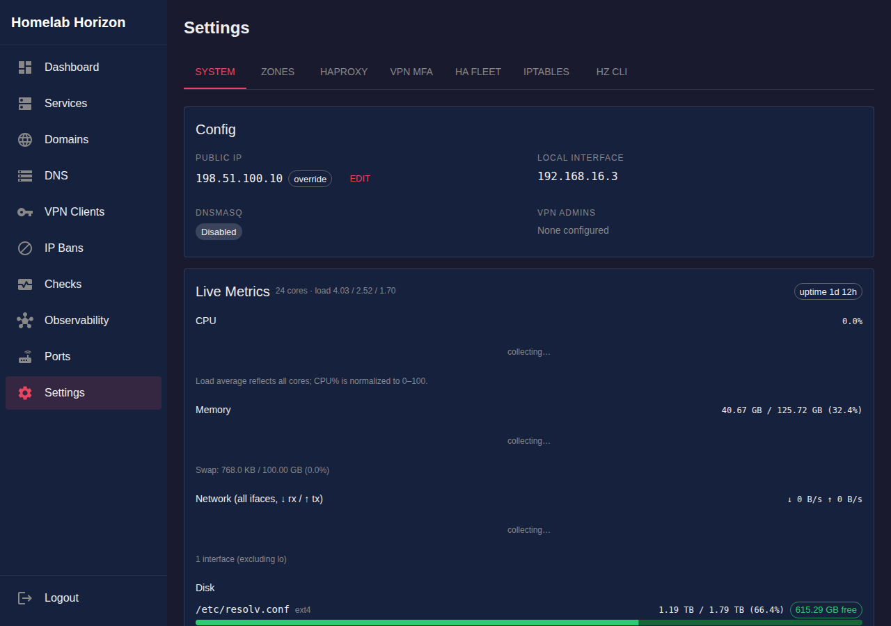

One self-hosted tool for WireGuard VPN, split-horizon DNS, HAProxy reverse proxy with automatic Let's Encrypt wildcard SSL, and service health monitoring — managed from a single web UI. Runs on Ubuntu/Debian.
Running a homelab with external access usually means stitching together systems that don't talk to each other: SSL certificate sprawl, broken internal HTTPS, manual DNS edits on every IP change, and a new WireGuard config file for every device. Homelab Horizon consolidates all of it.
Wildcard Let's Encrypt certs per zone, plus easy extra SANs for sub-zones. Inspect exactly what each cert covers — no more mystery broken HTTPS.
The same valid cert works on your LAN and from the public internet. No HTTP fallbacks, no browser warnings.
Add a service and DNS records update automatically across Route53, Cloudflare, Name.com, Hetzner, Gandi, DigitalOcean, Google Cloud DNS, and DuckDNS.
Services resolve to internal IPs on your network or VPN, public IPs from the internet — the classic split-horizon problem, solved.
Generate invite links. Users scan a QR code and they're connected — no manual peer setup.
Every service, its health, DNS records, and SSL certs in one place.






Kick the tires with Docker:
cd examples/simple
./setup.sh # generate WireGuard keys and config
docker compose up -d # start Homelab Horizon
# open http://localhost:8090 and grab the admin token:
docker exec hz cat /etc/homelab-horizon/config.json.tokenOr build the single static binary (Go 1.25+ and Node.js):
make
sudo ./homelab-horizon # installs systemd service, writes admin tokenFull setup guide, configuration reference, and HA topologies in the README on GitHub.